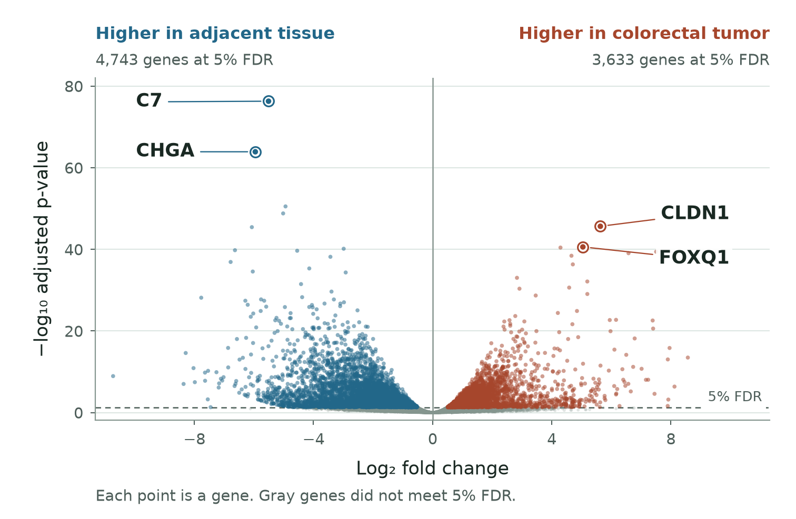
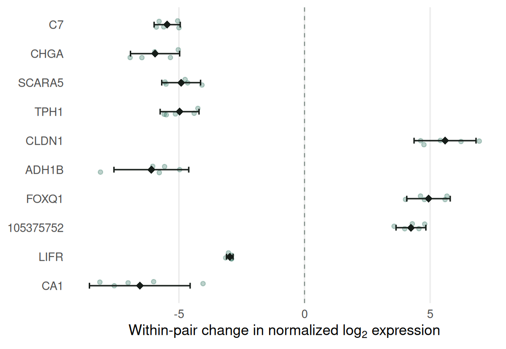
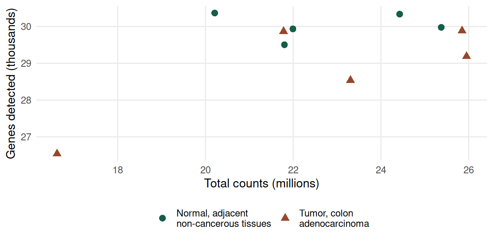

Colorectal tumor versus adjacent tissue
E2F targets, MYC targets V1 and G2/M checkpoint ranked higher in colorectal tumor.
In this colorectal cancer study, how does expression in the tumor differ from adjacent noncancerous tissue from the same patient?
The comparison used 5 matched pairs. The primary method was DESeq2. 10 of 12 GEO sample records had count columns. One pair lacked both count columns.
The pathway result is exploratory.
Exploratory pathway results
Higher in colorectal tumor
- E2F targets+3.79
- MYC targets V1+3.77
- G2/M checkpoint+3.48
- MYC targets V2+3.19
Higher in adjacent tissue
- Pancreas beta cells−2.15
- Allograft rejection−2.03
- Myogenesis−2.01
- Complement−1.95
Up to four sets per direction at 5% FDR, ordered by the absolute normalized enrichment score (NES). Bar lengths use the same scale across both groups.
E2F and G2/M gene sets ranked higher in tumors, a pattern associated with cell proliferation. In bulk tissue, this can reflect more cycling cells, changes in gene expression within cells, or both. 1 2
31 of 50 Hallmark sets met 5% FDR.
The headline sets kept their direction and met 5% FDR in all 5 leave-one-pair-out refits.
Paired expression results
8,376 of 28,042 tested genes met 5% FDR. The fit modeled 30,400 genes.
3,633 had higher expression in colorectal tumor and 4,743 had lower expression.

Full gene results · Larger volcano plot with selected genes · Heatmap of within-pair changes


Changes within each pair
The fit ranks genes by adjusted p-value, then by nominal p-value, decreasing absolute fold change and gene ID. The plot shows the first ten ranked genes with available paired effects. Each dot is a patient pair. Bars give nominal 95% intervals for the across-pair mean and are descriptive after gene selection.

Among 8,376 full-fit discoveries, 8,375 kept the same direction and 5,288 met 5% FDR in all 5 leave-one-pair-out refits.
7,259 genes met 5% FDR with the same direction in DESeq2, edgeR and limma-voom in this cohort.
Study design and sample checks
DESeq2 1.52.0 estimated the difference within pairs. Positive estimates mean higher expression in colorectal tumor.
Genes needed at least 10 total counts across the selected samples. Gene-level p-values were adjusted by the Benjamini–Hochberg method.
Raw-read quality was not verified.
Excluded 2 samples (no count column).
The smallest retained library had 16.6 million counts. The largest had 26.0 million.
Included libraries had 26,539 to 30,366 detected genes.

GSM4276882 and GSM4276876 had the largest within-pair shift on those two axes. Both samples were retained.

Explore sample annotations in the PCA
Sources and downloads
Publication and supplement checks were recorded after this fit.
- Paper · Checked. Chen and colleagues describe six paired colorectal specimens. Source
- Methods · Checked. Tumor and adjacent tissue were obtained after surgical resection. Source
- Paper tables · Checked. The main clinical table describes a separate tissue-chip cohort. Source
- Supplements · Checked. Table S1 lists clinical annotations for the six sequencing pairs. Source
- Patient or sample metadata · Found. All six sequencing pair codes match GEO. Five pairs have count data. Source
GSEApy 1.3.1 ranked 30,400 genes by their signed Wald statistics. FDR was adjusted across eligible sets in each fit.
GSE143939 · Sample decisions · Run checks · Library QC values · PCA values · Refit status · Run record · MSigDB Hallmark 2026.2.Hs